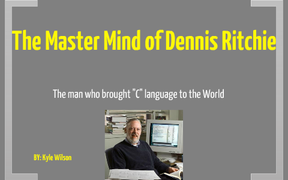

C is very propular language. C is a procedural programming language. It was initially developed by Dennis Ritchie in the year 1972. It was mainly developed as a system programming language to write an operating system. The main features of the C language include low-level memory access, a simple set of keywords, and a clean style, these features make C language suitable for system programmings like an operating system or compiler development.
Many later languages have borrowed syntax/features directly or indirectly from the C language. Like syntax of Java, PHP, JavaScript, and many other languages are mainly based on the C language. C++ is nearly a superset of C language (Few programs may compile in C, but not in C++).
It can be defined by the following ways:
C is the widely used language. It provides many features that are given below.
| Header | #include< stdio.h> | ||
| main() | int main() { | ||
| Variable Declaration | int a = 20; | ||
| Body | print("%d",a); | ||
| Return | return 0; { | ||
Following are the basic commands in C programming language:
| C Command | Explanation |
| #include< stdio.h > | This command includes standard input output header file(stdio.h) from the C library before compiling a C program |
| int main() | It is the main function from where C program execution begins. |
| { | Indicates the beginning of the main function. |
| printf(“Hello_World! “); | This command prints the output on the screen. |
| getch(); | This command is used for any character input from keyboard. |
| return 0; | This command is used to terminate a C program (main function) and it returns 0. |
| } | It is used to indicate the end of the main function. |
As we studied earlier, ‘C’ is a base language for many programming languages. So, learning ‘C’ as the main language will play an important role while studying other programming languages. It shares the same concepts such as data types, operators, control statements and many more.
A data type specifies the type of data that a variable can store such as integer, floating, character, etc.
There are the following data types in C language...
| Type | Data Types | ||
|---|---|---|---|
| Basic Data Type | int, char, float, double | ||
| Derived Data Type | array, pointer, structure, union | ||
| Enumeration Data Type | enum | ||
| Void Data Type | void | ||
| Data Types | Memory Size | Format |
|---|---|---|
| int | 2 bytes | %d |
| long int | 4 bytes | %ld |
| float | 4 bytes | %f |
| double | 8 bytes | %lf |
| char | 1 bytes | %c |
| string | %s |
An operator is simply a symbol that is used to perform operations. There can be many types of operations like arithmetic, logical, bitwise, etc.
C has six relational operators that can be used to formulate a Boolean expression for making a decision and testing conditions, which returns true or false :